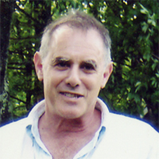

|  | Eric Feinblatt
Fashion Institute of Technology |
|
Bio: Eric Feinblatt has been the Coordinator of FIT's Center for Excellence in Teaching since its origins in 2001. He is responsible for instructional development at the College where he works closely with other faculty members to develop, use and assess effective instructional and curricular strategies to improve student learning. Since his arrival at the Fashion Institute of Technology in 1997, Professor Feinblatt has been an advisor to the Vice President of Academic Affairs and the Deans of the Schools of Business and Technology and Art and Design, helping them to formulate and initiate programs that leverage technology's potential to enhance FIT's educational mission. The Fashion Institute of Technology is one of 64 campuses within the State University of New York, the largest public University System in the U.S., and Professor Feinblatt has worked closely with SUNY Learning Environments to theorize the capabilities and architecture of its next generation learning management system. Eric is a frequent presenter at educational conferences, most recently as a panelist at the Small Tools/Big Ideas conference at FIT, the 2005 SUNY-wide Conference on Instructional Technologies where he spoke on the "Classroom Without Walls" and the "Image Library as Learning Environment," and at the 2005 CUNY/Baruch College Technology Conference where he gave a talk entitled "Visual Literacy: Preparing Faculty to Think about Thinking about Images." Prior to coming to FIT, Professor Feinblatt launched the Photography specialization in the Extended Studies Program at the Cooper Union in New York City. He continues to teach undergraduate and graduate classes at FIT, and is a member of the SUNY FACT (Faculty Access to Computer Technology) Advisory Council. Platform:
The greatest contribution that I can make to the Foundation Board of Directors stems from years of teaching experience, and my more recent responsibilities for faculty development. My perspective is steeped in the practices of teaching and learning, and I am keenly aware that the overwhelming majority of Sakai users will be learners, and that the success of Sakai is tied to its ability to appeal to those learners and enrich their learning experiences. If we lose sight of this, we have lost sight of what makes Sakai significant. The architecture of a learning environment determines the type of learning activity that occurs within it. The more rigid that environment is, the more constrained the activity becomes. For Sakai to remain true to its originating vision, it will not measure its success by the core toolsets it offers with each new build, but with its ability to develop a framework that can attract and integrate tools beyond this core. What separates Sakai, or what can separate Sakai from other course management systems that all share the same basic functionality, is that Sakai 's flexible architecture can support all learning environments Ð from classroom centric to fully asynchronous - with a single tool or a battery of tools. For example, if my face-to-face anatomy class needs an image presentation/annotation/discussion tool, and such a tool exists, I should be able to access it through Sakai just a my colleague who teaches a fully online course has a gradebook, a test engine, a discussion board, a chat room, etc. at her disposal. What this means for Sakai is that it needs to fully embrace what Barbara Taranto, Director of the Digital Library Program at the New York Public Library, calls an Education Inflected Architecture; that is, an architecture and interface that are designed, from the ground up, around pedagogical needs and objectives. Monolithic enterprise bundles that commercial CMS vendors have developed simply do not support this design model. Sakai 's framework architecture can. What needs to be done:
I am committed to the Sakai project because I think, if successful, it can influence the way the educational experience is mediated and delivered. If teaching and learning remains at its core, that influence will be significant and valuable. I hope that you give me the opportunity to work alongside the other board members to keep Sakai true to its mission and to insure its success. | |